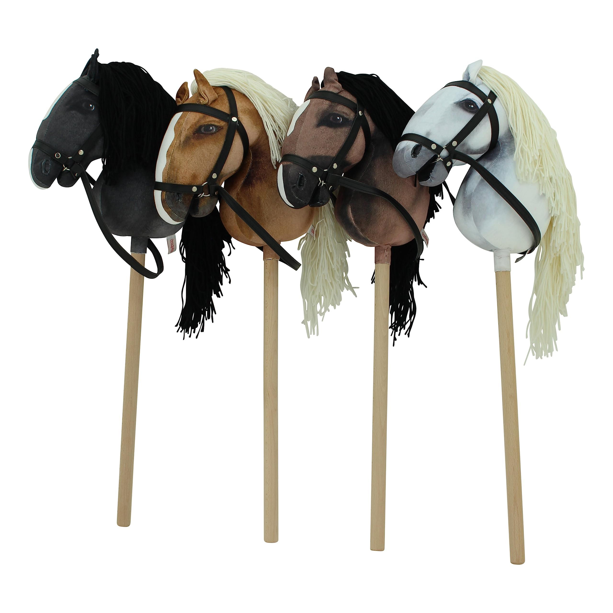

Was ist Hobbyhorsing?
Hobbyhorsing ist eine Sportart, bei der mit Steckenpferden (Hobby Horses) dressur- oder springreitähnliche Übungen durchgeführt werden. Es kombiniert Kreativität, Bewegung und Liebe zu Pferden – ganz ohne echtes Tier.
